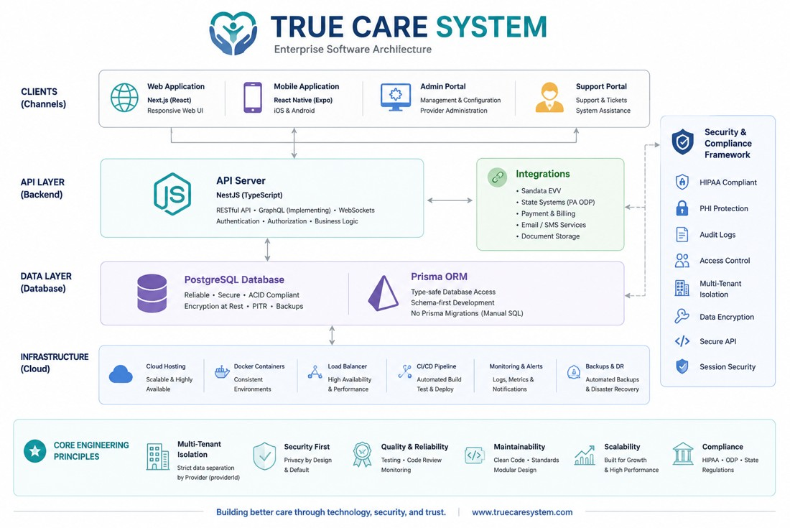

TRUE CARE SYSTEM ENGINEERING
Developer Guide
Engineering standards for architecture, repositories, backend, frontend, database, APIs, security, HIPAA, logging, Git, deployment, and AI-assisted development.
Development changes must preserve working functionality, Provider isolation, role-based access, HIPAA auditability, released Mobile compatibility, and integration stability. Never deploy AI-generated or unreviewed code directly to production.
Purpose
The Developer Guide defines the approved engineering practices used to build and maintain True Care System. Its purpose is to protect production stability, multi-tenant isolation, HIPAA-aligned auditability, data integrity, and consistent delivery across Web, API, Mobile, background jobs, integrations, and future AI agents.
The standards in this guide are designed for developers, technical leads, QA engineers, security reviewers, support engineers, and implementation partners working on the platform.

Core Engineering Principles
| Topic | Standard |
|---|---|
| Preserve working functionality | Do not rewrite or remove stable production logic unless the change is required, reviewed, tested, and explicitly approved. |
| Provider isolation | Every business record and query must enforce the authenticated Provider scope. |
| Minimal integration points | New frameworks such as HIPAA, support, logging, or AI should remain self-contained and integrate through small, explicit, reversible boundaries. |
| Traceability | Security-sensitive, PHI-related, support, impersonation, billing, and administrative actions must be attributable. |
| Backward compatibility | Changes must account for existing APIs, data, Mobile versions, scheduled jobs, and integration payloads. |
| Explicit data ownership | Each module must define which service owns validation, persistence, and state transitions. |
| No silent fallback | Errors, missing configuration, or invalid states must be surfaced clearly rather than hidden by guessed defaults. |
Documentation Pages
| Guide | Purpose |
|---|---|
| Overview | Engineering principles, scope, responsibilities, and change governance. |
| System Architecture | Platform components, data flow, multi-tenancy, integrations, and trust boundaries. |
| Repository Structure | Approved organization of API, Web, Mobile, documentation, and shared assets. |
| Backend Standards | NestJS modules, services, controllers, validation, authorization, and error handling. |
| Frontend Standards | Next.js and React conventions, data loading, forms, state, accessibility, and stability. |
| Database Standards | PostgreSQL integrity, Provider scoping, indexes, transactions, and manual SQL discipline. |
| Prisma Standards | Schema changes, relations, generation, query patterns, and the no-migration policy. |
| API Standards | Routes, DTOs, authentication, response structure, pagination, filtering, and version safety. |
| Security Coding Rules | Authorization, secrets, input validation, tenant isolation, and secure defaults. |
| HIPAA Coding Rules | PHI handling, purpose of use, minimum necessary, audit metadata, and support access. |
| Logging Standards | Operational logs, audit logs, PHI-safe diagnostics, correlation IDs, and observability. |
| Git Workflow | Branch discipline, focused commits, review, rollback readiness, and separate deployment units. |
| Deployment | Build verification, environment configuration, rollout, smoke testing, and rollback. |
| AI Coding Rules | Safe use of AI assistance without weakening review, privacy, or production safeguards. |
Required Change Sequence
- Understand the existing workflow.
Review the current API, database, Web, Mobile, background job, and integration behavior before editing.
- Define the smallest safe change.
Do not combine unrelated refactoring with a production fix.
- Protect Provider scope and authorization.
Confirm every read and write is restricted correctly.
- Implement and validate.
Run type checking, targeted tests, build verification, and manual workflow checks.
- Document and commit.
Record the purpose, affected files, database steps, testing evidence, and rollback approach.